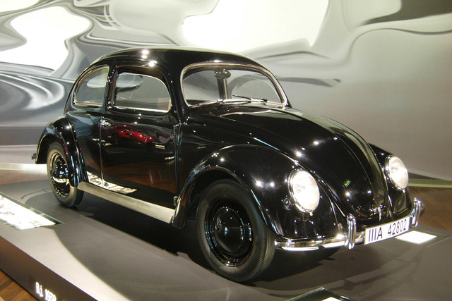
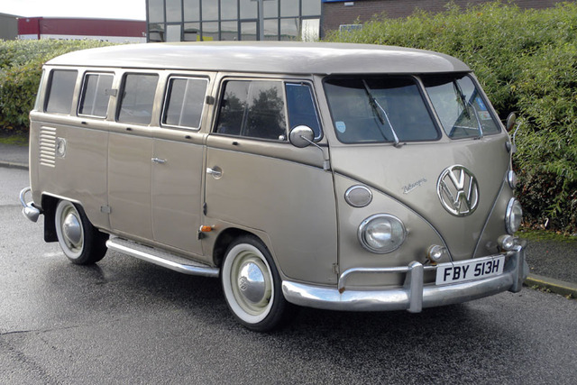
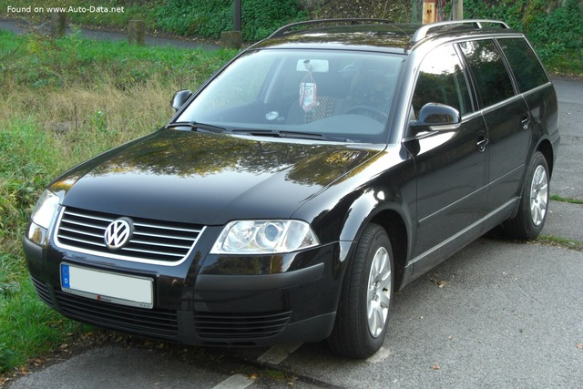

Volkswagen
A Volkswagen története az 1930-as években kezdődött, amikor Adolf Hitler támogatásával Ferdinand Porsche tervezte meg a "népautót", azaz a Volkswagen Bogarat, amely 1938-ban debütált. Az eredeti terv az volt, hogy megfizethető autót hozzanak létre a német közönség számára. A második világháború után, 1945-ben a szövetséges erők elfoglalták a Volkswagen gyárat, és a brit megszálló erők felügyelete alá helyezték. A Volkswagen Bogár népszerűsége folyamatosan nőtt az évek során, és a gyár által kínált autók köré számos új modell csatlakozott, például a Volkswagen Kombi és a Volkswagen Golf. A Volkswagen márkát a mai napig az egész világon ismerik és elismerték a minőségi autógyártásban.
 Itt mutatjuk be személyes kedvencünket a Volkswagen kínálatából.
Milán személyes kedvence:
Volkswagen Passat (shitbox)
Göröcs személyes kedvence:
asd